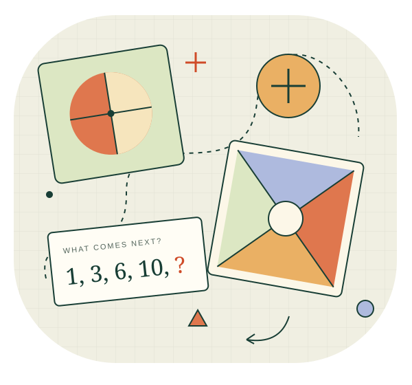

A NEIGHBORHOOD MATH CIRCLE
Small questions.
Big discoveries.
A place for curious kids to explore puzzles, play with ideas, and discover mathematics together.
Join the interest listGrades 1–5 · Education Hill, Redmond

A little curiosity goes a long way.ROOM TO WONDER
There’s more than one
way to see a problem.
Puzzles, games, and hands-on discovery. We’ll ask questions, try different approaches, and share the joy of figuring things out.
A LITTLE TASTE OF THE CIRCLE
One square.
How many ways?
Can you divide a square into two pieces with equal area? How many different ways can you find?
A hint to get you started
Try a vertical line, then a diagonal. Any straight line through the center works. Can you explain why?
No timer. Just a pencil, some paper, and an idea.
STARTING SMALL, TOGETHER
Your local
math circle.
Organized by Deepak Venkatesh, a Redmond parent and mathematics enthusiast who has written a complete set of worked solutions to Gelfand’s Algebra and enjoys helping children discover mathematical ideas for themselves.
- When and where?
- Education Hill, Redmond. The venue, schedule, and start date will be confirmed.
- Is it right for my child?
- Curious kids in grades 1–5 are welcome. Activities will be adapted to the group.
- How do we get started?
- Complete the interest form below. The expected fee is about $5 per session.
LET’S GET THE CIRCLE STARTED
A seat for curiosity.
Parents and guardians, express your interest below. There’s no commitment to register.
Open the form in a new tabForm not loading? Use the link above to open Google Forms.